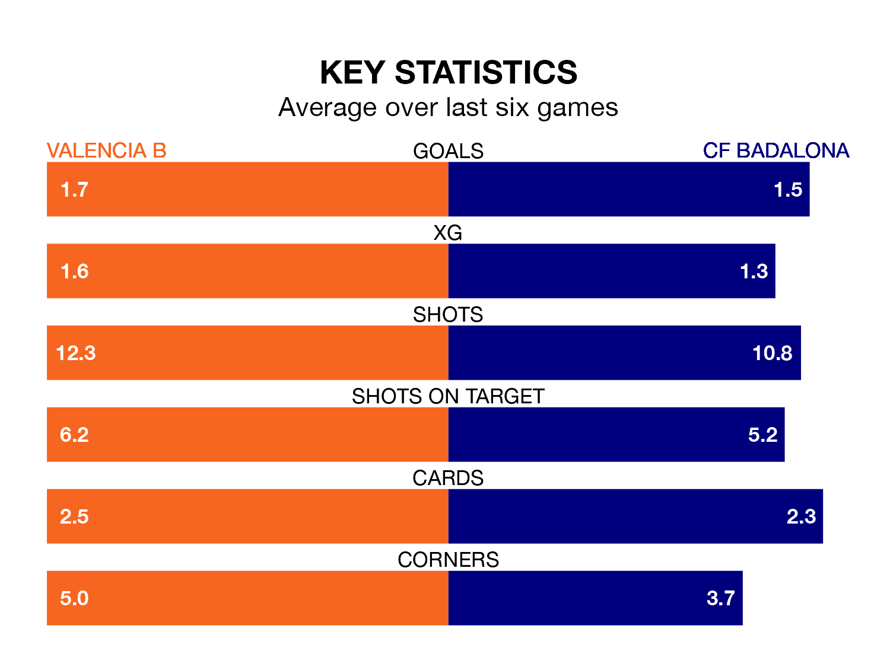

Valencia B host CF Badalona at the Estadio Antonio Puchades on late Sunday on the back of four consecutive wins in the Segunda División RFEF Group 3.
Valencia B have picked up 13 points from their last six games, and they face a Badalona side who have also won their last three matches, and collected 14 points from the last possible 18.
Badalona are top of the table after 22 games, of which they have won 11 and drawn nine, earning 42 points.
Valencia B are six places behind the visitors in seventh, with eight wins and six draws putting them on 30 points.
With 29 goals in 22 games so far this season, the home side are scoring more than average in the league with 1.3 goals per game. And they are conceding fewer than average, letting in 24 goals at a rate of 1.1 per game.
Badalona are also above average scorers, with 1.3 goals per game, compared to a league average of 1.2. They have conceded 0.7 goals per game.
In the last 10 years, Valencia B and Badalona have played each other on 16 occasions. Valencia B won five of them, Badalona six, and they drew five times.
On average, Valencia B scored 1.1 goals and Badalona 1.2 in those matches.
Their last meeting was on October 8, when Badalona won 2-1 at home.
Valencia B's last match was on February 11, a 1-0 win against Cerdanyola del Vallès, with Diego Aznar Valero getting the goal for Valencia B.
Badalona beat Peña Deportiva 2-1 last time out, also on February 11, with Carlos Javier Polo Jiménez and José María Moreno López on the scoresheet.
Updated: 12:06 (UTC), 15/02/24